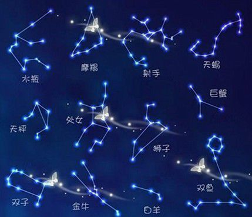

星座小知识
白羊座（3月21日 - 4月20日）
白羊座的符号象征羊的头，是一种象形的方法，取出羊最明显的羊角和鼻梁部分；由白羊座的神话可以联想到一些特质，
例如冲动、喜欢自由、勇往直前。而由另一方面，也有人指白羊座的符号是象征新生的绿芽，表现出新生和欣欣向荣的景象。
金牛座（4月21日 - 5月21日）
金牛座的符号象征了牛的头，也是以简单的线条描绘出牛的形象；
双子座（5月22日 - 6月21日）
双子座的符号象征双胞胎，相较于前两个符号，就比较抽象了一点
；由双子座的神话可以知道双子座的二元性和内在的矛盾。
巨蟹座（6月22日 - 7月22日）
巨蟹座的符号象征胸，也就是说明了巨蟹和胸有关；
由巨蟹座的神话可以想像，有一种家的感觉，同时也和忌妒有关。
狮子座（7月23日 - 8月22日）
狮子座的符号象征狮子的尾巴，充分显示了狮子座的个性；由狮子座的神话可以联想到，狮子座的风流与热情。由狮子去联想狮子座的特性，很容易就可以想到很多，热情、同情心，但是别忘了，母狮子才是出外狩猎的。
处女座（8月23日 - 9月22日）
处女座的符号象征女性的生殖器；但如果你注意看右半边，就可以发现。处女座的神话中，可看出收成的意涵。由处女去联想处女座的特质，也可以发现一些，如小心、谨慎、沈静和羞怯。由另一方面，处女也代表了安静和敏锐。

天秤座（9月23日 - 10月23日）
天秤座的符号象征一杆秤子，希腊字母Ω代表了衡量，而下面的“-”则代表了衡量的基础。
天蝎座（10月24日 - 11月22日）
天蝎座的符号象征男性的生殖器；由天蝎座的神话中，可以知道天蝎座是忌妒的来源。由男性生殖器可以知道天蝎座对性的欲望，另一方面，也有人认为天蝎座的符号是象征蝎子的甲壳和毒针，表现出复仇的特质。
射手座（11月23日 - 12月21日）
射手座的符号象征是射手手中的箭，回到象形的形式；由射手座的神话可以看出射手座的智慧和对知识的追求。射手的原型是拿
弓箭的人马，下半身的马象征着对理想的追求，上半身的人象征知识和智慧，而手中的箭，则表现出射手座对精神层次追求的一面。
摩羯座（12月22日 - 1月20日）
摩羯座的符象征羊的头和鱼的尾，抽象但基本上是象形的；由摩羯座的神话我们可以知道摩羯的担心和恐惧。。
水瓶座（1月21日 - 2月19日）
水瓶座的符号象征水和空气的波，是具象但又抽象的；由水瓶座的神话中，可以看出水瓶座的爱好自由和个人主义。象征水瓶座的波，
是高度知性的代表，由波的特性去思考水瓶座的特质，看似有规律但没有具体的形象，是一个不可预测的星座。
双鱼座（2月20日 - 3月20日）
双鱼座的符号象征两条鱼，而其中有一条丝带将它们联系在一起；
由双鱼座的神话中可以联想到双鱼座逃避的特质。双鱼座的两条鱼是分别游向两个方向，
除了表现出双鱼座的二元性之外，也象征了双鱼座的矛盾和复杂。